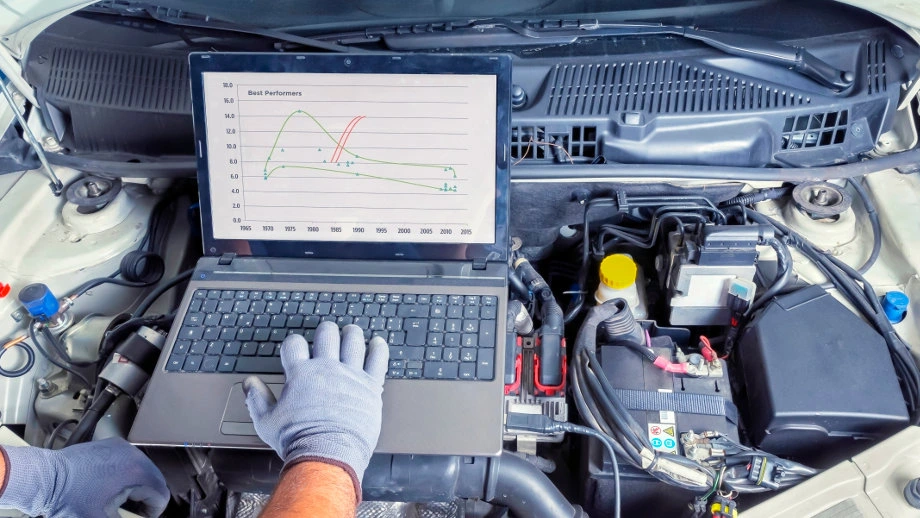
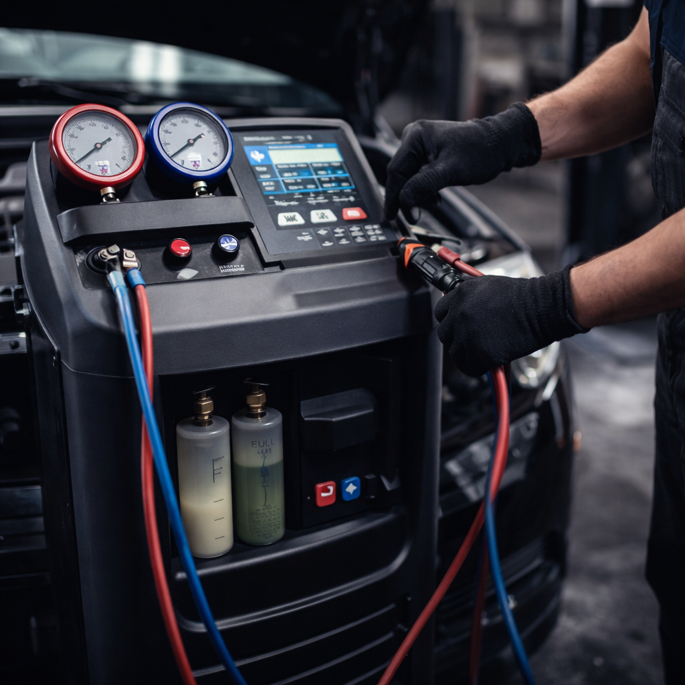

Profesjonalne usługi mechaniczne
Diagnostyka, naprawy i kompleksowa obsługa Twojego samochodu. Szybko, precyzyjnie i bez zbędnych kosztów.
O naszym warsztacie
Nasz warsztat to miejsce, w którym łączymy wieloletnie doświadczenie z nowoczesną technologią. Od lat pomagamy kierowcom utrzymać ich samochody w doskonałym stanie technicznym, oferując rzetelną diagnostykę oraz skuteczne naprawy.
Każdy pojazd traktujemy indywidualnie — dokładnie analizujemy problem, wyjaśniamy jego przyczynę i proponujemy najlepsze rozwiązanie. Dzięki temu masz pełną kontrolę nad tym, co dzieje się z Twoim samochodem.
Pracujemy na profesjonalnym sprzęcie diagnostycznym i korzystamy ze sprawdzonych części, co pozwala nam zapewnić trwałość oraz bezpieczeństwo każdej naprawy. Naszym celem jest nie tylko usunięcie usterki, ale także zapobieganie kolejnym.
Stawiamy na uczciwość, przejrzystą komunikację i szybki czas realizacji, dlatego zaufało nam już wielu zadowolonych klientów.
Diagnostyka komputerowa
Oferujemy precyzyjną diagnostykę komputerową, która pozwala szybko wykryć źródło problemu w Twoim samochodzie. Dzięki nowoczesnym narzędziom jesteśmy w stanie odczytać błędy, przeanalizować parametry pracy silnika oraz zlokalizować usterki, zanim doprowadzą do poważniejszych awarii.
- Odczyt i kasowanie błędów ECU
- Diagnostyka silnika, ABS i poduszek powietrznych
- Analiza parametrów pracy pojazdu w czasie rzeczywistym
- Wykrywanie ukrytych usterek i spadków wydajności

Naprawa silnika
Kompleksowo zajmujemy się naprawą silników wszystkich marek i modeli – zarówno benzynowych, jak i diesla. Diagnozujemy usterki, usuwamy awarie oraz przeprowadzamy pełne remonty jednostek napędowych.
- Wymiana i regeneracja podzespołów
- Naprawa głowicy i uszczelek
- Usuwanie wycieków i spadków mocy
- Kontrola i diagnostyka silnika
Zawieszenie i hamulce
Zajmujemy się kompleksową naprawą układu zawieszenia oraz hamulcowego, zapewniając bezpieczeństwo i komfort jazdy. Wykrywamy zużyte elementy, eliminujemy luzy oraz przywracamy pełną sprawność pojazdu.
- Wymiana klocków i tarcz hamulcowych
- Naprawa amortyzatorów i sprężyn
- Diagnostyka zawieszenia
- Usuwanie stuków i luzów
Klimatyzacja
Oferujemy kompleksową obsługę klimatyzacji samochodowej – od diagnostyki, przez napełnianie, aż po usuwanie usterek. Dbamy o wydajność układu oraz czyste i zdrowe powietrze w Twoim samochodzie.
- Napełnianie i odgrzybianie klimatyzacji
- Wykrywanie nieszczelności
- Wymiana filtrów kabinowych
- Serwis sprężarek i układu chłodzenia

Masz problem z samochodem?
Nie czekaj aż usterka się pogłębi. Skontaktuj się z nami już teraz i umów wizytę — szybka diagnoza, uczciwa wycena i profesjonalna naprawa.